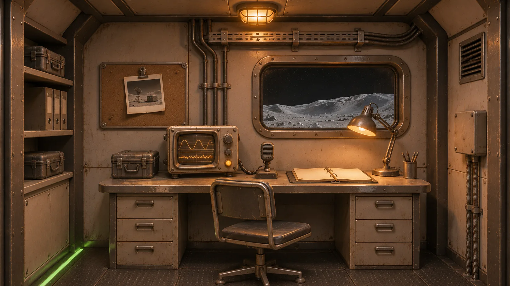

NIGHTGLASSLUNA · 93 YEARS BEFORE FARWAKE

MARA VENN · NIGHT SHIFT
Nightglass
Opening viewpoint…
TaskTest the radio
YOUR ASSIGNMENT
Test the radio
Check whether the fault is inside the station.
EXITSList of exits
IN THIS VIEW
Progress stays on this deviceSound starts with your expedition